ПРОЙДЕНО
Меню: 2 услуги
Отправлена новая /start. В меню две активные услуги; нажатия обеих кнопок вернули соответствующие названия.
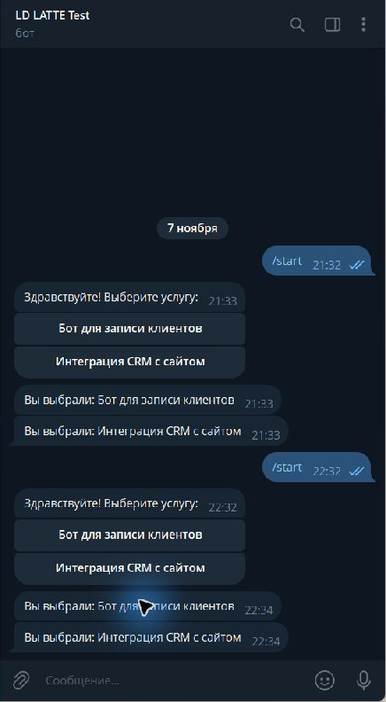
Реальные сообщения и нажатия в Telegram Desktop. Проверенный бот: @ld_latte_tested_bot . Снимки обрезаны до области тестовой переписки; содержание сообщений не изменено.
Меню 2/5/9/0, выбор по ID, добавление, переименование, отключение и удаление. Workflow не редактировался, n8n не перезапускался. В конце восстановлены исходные названия и две активные услуги.
Отправлена новая /start. В меню две активные услуги; нажатия обеих кнопок вернули соответствующие названия.

Изменена только активность в таблице. Новая /start показала пять кнопок; пятая вернула «Синхронизация остатков».
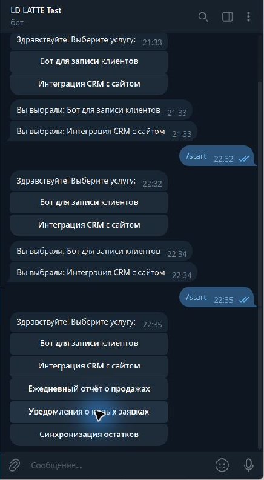
Новая /start показала все девять активных услуг. Девятая кнопка вернула «Проверка качества данных».
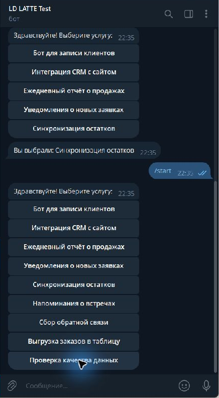
В таблице изменено имя первой услуги. Кнопка из старого меню вернула новое имя: «Бот записи — новое название». Это подтверждает выбор по ID.
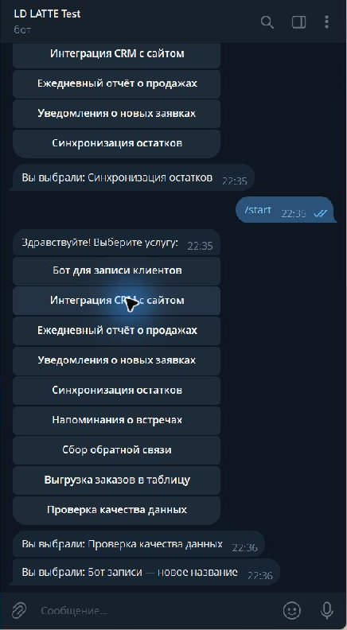
После повторной /start кнопка показала новое название из таблицы.
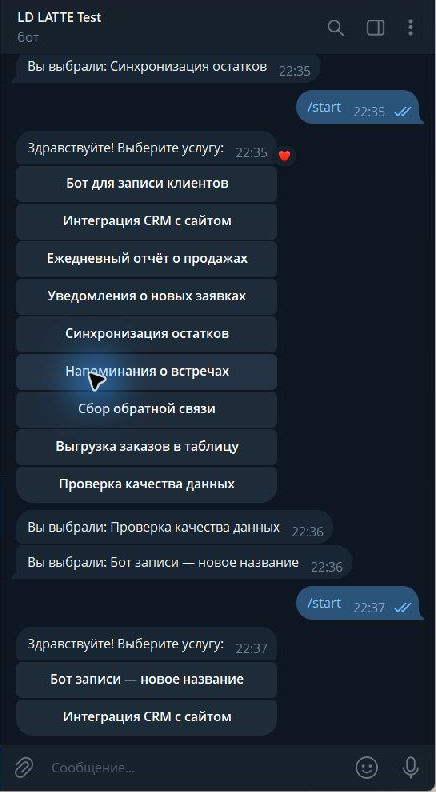
У второй услуги выключена активность. Старая кнопка вернула «Эта услуга больше недоступна. Обновите меню: /start».
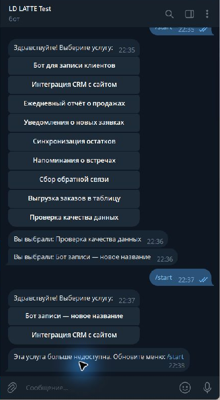
Новая /start показала только одну активную услугу, без отключённой CRM-интеграции.
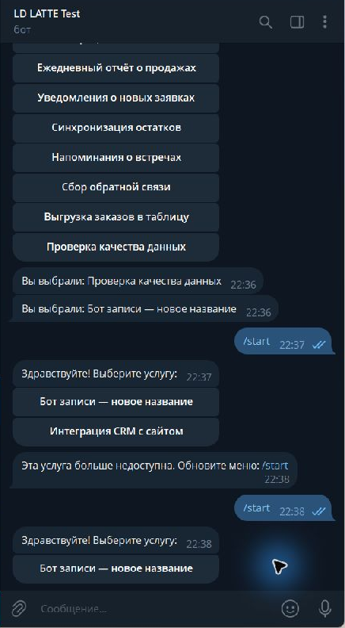
Добавлена вымышленная строка «Автоматическая сверка оплат». Новая /start показала её отдельной кнопкой.
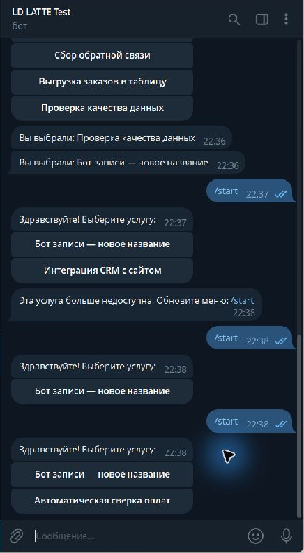
Нажатие новой кнопки вернуло её название.
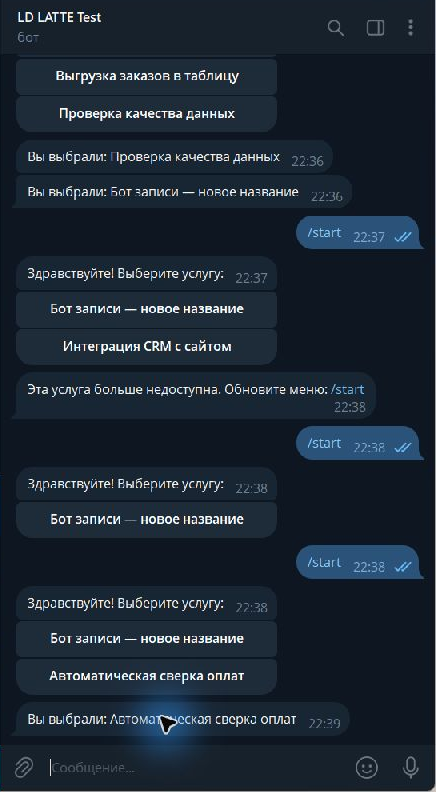
Удалена только добавленная для проверки строка. Старая кнопка безопасно сообщила, что услуга больше недоступна.
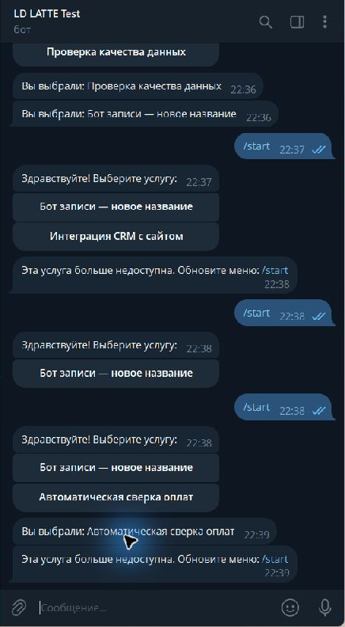
Повторная /start показала меню без удалённой услуги.
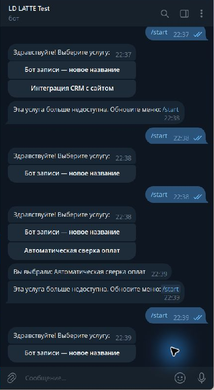
Выключены все услуги. /start вернула понятное сообщение без клавиатуры: «Сейчас активных услуг нет. Пожалуйста, попробуйте позже».
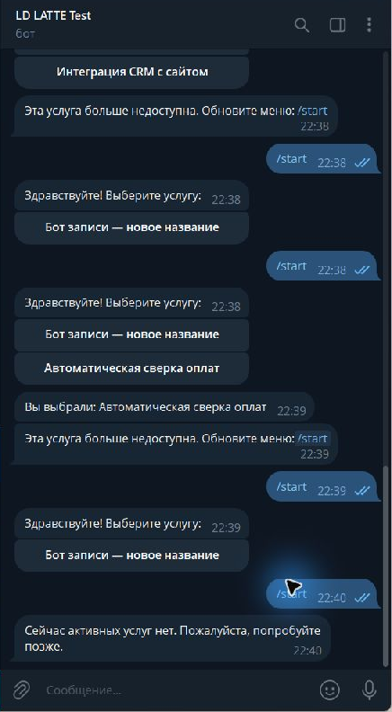